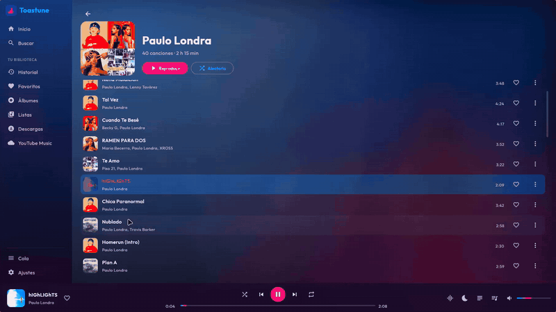
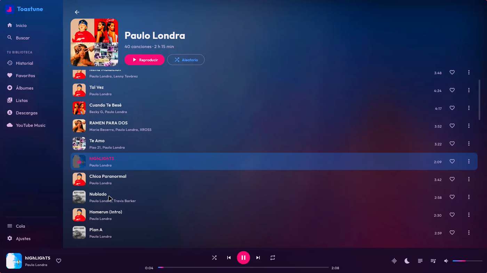
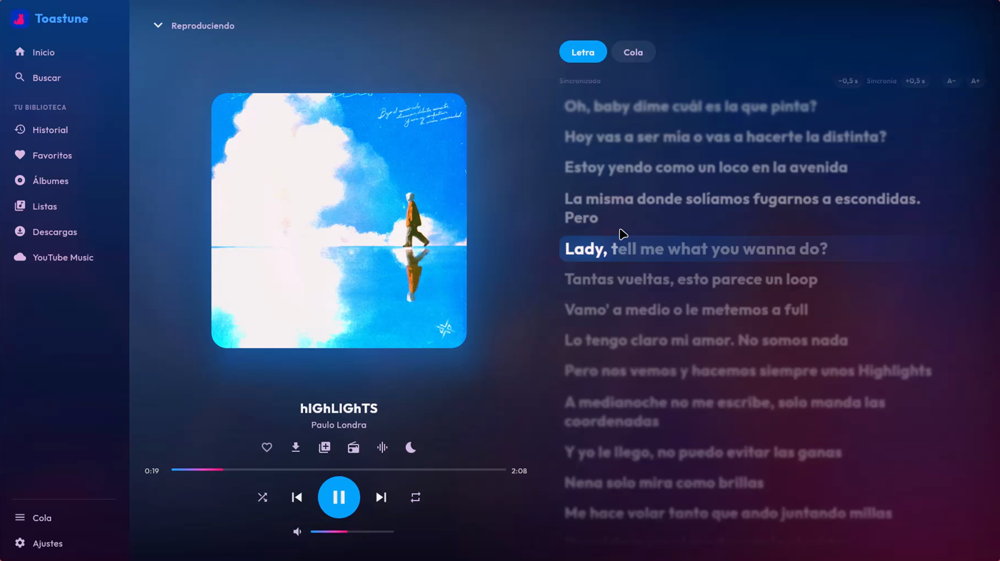
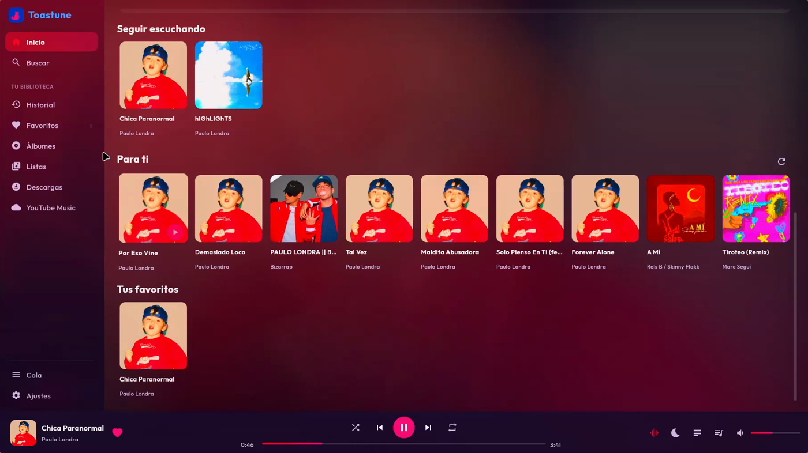
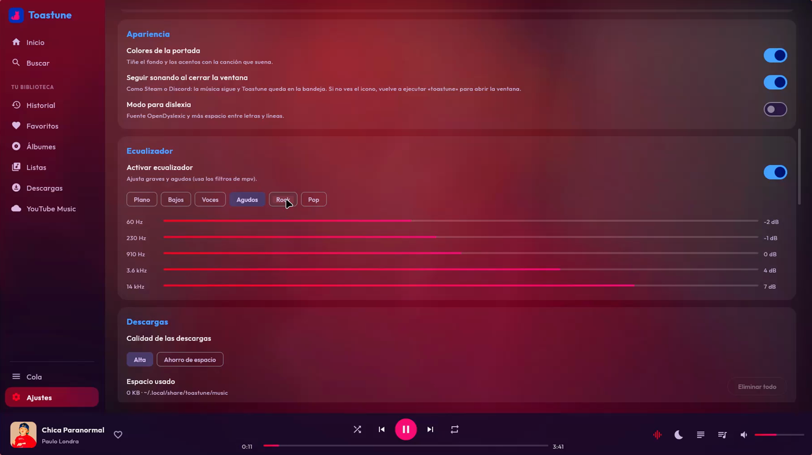
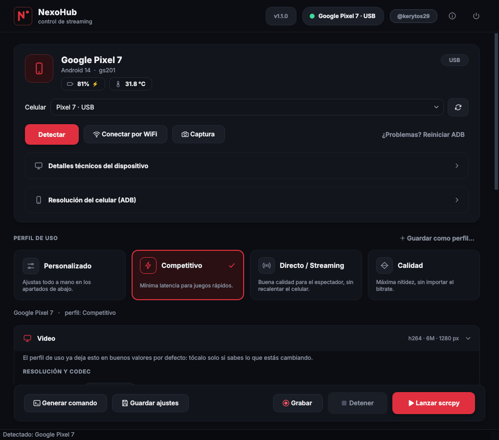

Software libre hecho por Kreytos29: un reproductor de música para Android y Linux, y una herramienta para controlar el celular desde la PC.
Reproductor de música libre para Android y Linux
Busca y reproduce desde YouTube Music, sin anuncios ni rastreo. Nombrado por Tostada, una gatita muy querida.





Control de streaming de celular con scrcpy
Detecta tu celular Android, tu conexión USB, tu monitor y tu CPU, y arma automáticamente el comando scrcpy óptimo para tu equipo. Se usa con una interfaz gráfica o desde la terminal.
